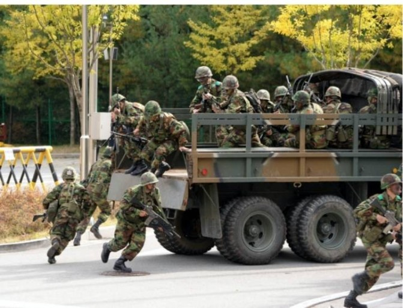

안녕하세요 그냥 심심해서 만들어보고 있는데 나름 재미있네요 신상훈씨 너무 고생이 많으십니다 ^^

5분전투대기부대 또는 5분대기조는 흔히 5대기라는 약칭으로 불리는 대한민국 국군의 초동 대처 부대이다.
군사대외비 3급에 해당하는 대통령 훈령 제 28호 통합방위지침에 근거한다.
상황 발생시 5분 내에 단독 군장을 착용하고 차량 탑승까지 한 뒤, 상황 발생지로 출동,
침투한 적을 추격 및 섬멸하는 것과 유기물을 제거하는 것을 주 임무로 한다.